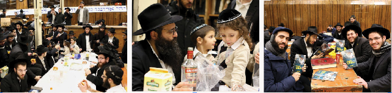

משולחנות הפארבריינגענ’ס
סיפר אחד התמימים: “אחד האברכים אצלנו בשכונה בה אני מתגורר, החליט בהתוועדות י”ט כסלו השנה לצאת ל”מבצעים” כל יום שישי. י”ט כסלו השנה יצא ביום חמישי, ולמחרת - כ”ף כסלו יצא למבצעים. הוא העמיד דוכן באמצע הרחוב, והחל להציע לעוברים ושבים להניח תפילין. ההיענות הייתה קלושה. לפתע הוא שם לב לאדם שמתקרב אליו, ה
משולחנות הפארבריינגענ’ס
סיפר אחד התמימים: “אחד האברכים אצלנו בשכונה בה אני מתגורר, החליט בהתוועדות י”ט כסלו השנה לצאת ל”מבצעים” כל יום שישי. י”ט כסלו השנה יצא ביום חמישי, ולמחרת - כ”ף כסלו יצא למבצעים. הוא העמיד דוכן באמצע הרחוב, והחל להציע לעוברים ושבים להניח תפילין. ההיענות הייתה קלושה. לפתע הוא שם לב לאדם שמתקרב אליו, הוא לא היה נראה דתי בלשון המעטה. האברך החליט לפנות אליו בבקשה להניח תפילין. לאחר שהנ”ל הסכים, האברך שם לב שהלז אמר כנראה “לחיים”, ריח חריף של אלכוהול נדף ממנו. לאחר שסיים הלה להניח, שאל אותו האברך: “תגיד לי אמרת לחיים?” - “בטח אמרתי. י”ט כסלו! לא נגיד לחיים”? ענה לו אותו אדם.
האברך שקלט שלפניו כנראה סיפור מיוחד המשיך לדובב אותו, “איפה התוועדת? היית באיזה בית חב”ד או אולי אצל השליח אצלכם בישוב?” ענה לו אותו אחד: “לא שליח ולא בית חב”ד. אני מתגורר גם בישוב קרוב, שאין בו שליח של חב”ד. פשוט אתמול בלילה, הגעתי לבית של חבר, ואשתו סיפרה שהייתה לפני שנתיים בתקופה הזו בבית חב”ד במזרח הרחוק, והיא זוכרת שהיום יש חג שבו צריך להגיד לחיים, כמובן שהיא סיפרה לנו את הסיפור עם הגלגלים השחורים והעגלה המסוכנת” התרברב.
לאחר דבר תורה על מהותו של יום, נפרד ממנו האברך תוך כדי איחול “לשנה טובה תכתב וכו’”. “לאחמ”כ סיפר לי האברך, אמר הבחור שסיפר את הסיפור, “תתבונן. אנחנו חושבים שהרבי צריך את ההחלטות טובות שלנו לקרב יהודים לרבי. הרבי מסתדר בלעדינו. הנה תראה את האדם הזה. הוא חגג י”ט כסלו בלי שליח ובלי איזה בית חב”ד שיזמין אותו ל”מסע מדיטציה” או משהו בסגנון. הרבי דואג לכל אחד, השאלה היא אנחנו מוכנים להכיר בזכות הגדולה שזיכה אותנו או לא?”.

לאחרי תפילת שחרית והריקודים התקיימה התוועדות בר מצוה במזרח 770, בהשתתפות אנ”ש והתמימים.
במהלך היום בקרו מקורבים בבית משיח 770, כמידי יום ראשון.
בשעה 2:20 כרגיל התקיים סדר רמב”ם במרכז 770 בית משיח לקבלת פני משיח צדקנו.
לאחר מנחה התקיים השיעור היומי בדבר–מלכות השבועי לקבלת פני משיח צדקנו, במזרח 770. השיעור נמסר ע”י הת’ ברוך שניאור שי’ נחשון.
בסביבות השעה 11:00, הגיע ל–770 שליח כ”ק אד”ש, ר’ נפתלי שי’ אסטולין. לסיבת הופעתו, הסביר ערב כ”ח טבת היום. “יחי טבת, ויתן עז למלכו וירם קרן משיחו”, הוא מיד היסב ליד אחד השולחנות, והתוועד על כ”ח טבת (יום הולדת אם המלכות). ההתוועדות הסתיימה בשעות הבוקר ביום שלמחרת. לא נכחתי בה.
יום שני, כ”ח טבת
יום הולדת הרבנית הצדקנית מרת חנה ע”ה שניאורסאהן, “אם המלכות”.
היום בשיעור בשורת הגאולה למדו השיחה הידועה ש”ענוים הגיע זמן גאולתכם”.
היום החל ב–770 המבצע של “את”ה המרכזי - 770” לקראת יום הבהיר יו”ד–י”א שבט. במבצע המיוחד מתאחדים תמימים מכל רחבי תבל ב”מחשבה דיבור ומעשה” בעניני גאולה ומשיח.
בצהריים התקיים סדר רמב”ם, ביחד עם “האפשערניש”, של בנו הרה”ח הרב עמוס שי’ כהן. כיון שכך, היה אוכל בשפע ומשקה כיד המלך.
לפני מעריב, הגיעו קבוצה של כמה אברכים חסידי פולין. כמה מהתמימים ניגשו אליהם וערכו להם סיור מקיף בבית חיינו, תוך כדי שמראים להם גם את השלטים התלויים על הקירות; אחד הבחורים שאלם: “תגידו, ראיתם בית כנסת שיש בו שלטים, עם ציטוטים שכאלו”? משענו בשלילה, הסביר להם הבחור: “בית כנסת זה יש לו תפקיד לעורר את כל היהודים לקראת הגאולה (וכאן הוא הסביר להם את סוף ס”ה בקונטרס “בית רבינו”), כיון שהוא משמש בעיקר כביתו של גואלן של ישראל שבדור. בתום הסיור, כשכולם מלאים בהתלהבות אמר אחד מהם לא’ מהתמימים: “עכשיו אני מבין מה זה רבי חי”.
לאחרי סדר חסידות–ערב, התקיים ב–770 ה”סדר” - “סדר לקוטי–שיחות, מתנה לכ”ק אדמו”ר שליט”א”. כפי שסיפרתי לך, סדר זה מלא במיוחד. המארגנים לא צריכים להתאמץ הרבה בכדי להושיב את רובם המוחלט של הבחורים, כולל כמה בעלי–בתים. הסדר התקיים כרגיל עם פארבייסען בשפע.
בשעה 10:30 לערך החלה ההתוועדות הקבועה בפינה הצפונית מזרחית, לקבלת פני משיח צדקנו בפועל ממש. עם התמימים מתוועד הרב עמוס שי’ כהן.
יום שלישי, כ”ט טבת
בצהריים כרגיל התקיים סדר רמב”ם.
לאחר תפילת מנחה, מודיע בחור נמרץ על ‘סדר’ מיוחד כהכנה ליו”ד שבט “חיים שנה”, ו”כעת כל אחד ילמד יחד עם חברי החדר שלו את השיחה של ב’ ניסן תשמ”ח”. חולקו חוברות, ועשרות רבות של בחורים מתלמידי הישיבה, התיישבו ללימוד משותף כשהם מעיינים יחד בשיחה המיוחדת. בשיחה זו מורה כ”ק אד”ש “באותיות פשוטות” מהי המשמעות של היום הגדול אליו אנו מתקרבים.
לאחר סדר חסידות ערב התקיים השיעור השבועי בעניני גאולה ומשיח לעיון לדוברי אנגלית. השיעור מתקיים מתחת לעזרת נשים איסטערן פארקוויי עם פארבייסן בשפע. בהמשך הערב התקיים “סיום הרמב”ם” בארגון האחראי המסור הרב מנחם נחום שי’ גערליצקי.
במהלך הלילה מתקיימות מספר התוועדויות, ביניהם, התוועדות יום הולדת לא’ התמימים שהגיע לכ”ק אד”ש לקראת יו”ד שבט. שמעתי סיפור מעניין (ראה מסגרת)
יום רביעי, א’ דר”ח שבט
הבוקר התקיים ‘סדר השכם’ מיוחד. בסדר הקשיבו כולם לשיעור מיוחד מפי הת’ אריאל שי’ קדוש. השיעור היה בשיחת ב’ ניסן תשמ”ח, הנלמדת לאחרונה שוב ושוב בקשר עם ‘חיי”ם שנה’ לנשיאותו של הרבי שליט”א מלך המשיח.
במהלך הבוקר ירד קצת שלג בשכונת המלך.
באמצע שחרית עברה הלוי’ של מרת רבקה ע”ה ניובארט. לפני תפילת מוסף עברה הלוי’ של הילדה השלוחה חנה קסלמן ע”ה שנפטרה בדמי ימיה לאחר ייסורים קשים מהמחלה הארורה ה”י. דאלאי גלות. ומחה הוי’ דמעה מעל כל פנים.
לאחר התפילה והריקודים התקיימו התוועדויות הנחת תפילין, עם פארבייסען בשפע.
לאחר מנחה התקיים הלימוד המשותף בשיחת ב’ ניסן תשמ”ח, כאתמול.
יום חמישי, ב’ שבט
בשעה 1:00 לערך התקיימה הלווייתו של זקן חסידי חב”ד הרב מנחם מענדל מרוזוב ע”ה שנפטר אמש כשהוא בן 101 שנים. ההלוויה עברה ליד ישיבת “אהלי תורה” בה שימש כחבר הנהלה וכמשפיע, כשכל תלמידי המוסד יוצאים לחלוק לו כבוד אחרון. משם המשיכה ההלוויה בדרכה ועברה מול בית משיח - 770, שם הצטרפו קהל רב מתושבי שכונת המלך.
בהפסקת צהריים התקיים סדר רמב”ם כרגיל. לאחר הכרזת יחי אדוננו, הקריא א’ מהתמימים את הקטע הידוע ברמב”ם היומי “אודות הנודר שלא ישתה יין ביום שבן דוד בא, והזכיר את ביאורו של כ”ק אד”ש בזה.
לפני מעריב הגיעו קבוצת מקורבים מברזיל בליווי השליח ר’ נח שי’ גאנזבורג.
לאחר מעריב הפעיל א’ התמימים רמקול עם הניגון החדש שחיבר הרב יוסף יצחק שי’ סילברמן מארה”ק לכבוד ‘חיים שנה לנשיאות’, התמימים רקדו לצלילי הניגון במשך כעשר דקות.
לאחרי הסדרים והשיחה היומית התקיים השיעור השבועי בעניני גאולה ומשיח לעיון. השיעור התקיים בקדמת 770, כשאת השיעור מוסר בכישרון רב, הרה”ת אלישע שי’ קצבי בנושא ‘אין מלך בלא עם’. במקביל, במערב 770, החלה התוועדות עם ר’ שלום מרדכי שי’ רובשקין, לכבוד מלאות חודש לשחרורו הניסי בתחילת חודש טבת האחרון.
יום שישי, ג’ שבט
תאריך זה מזכיר את שיחת הקודש המיוחדת משנת תשנ”ב, בה אמר כ”ק אדמו”ר מלך המשיח שליט”א שבדורנו זה לא יהי’ הענין של “הדיבור הוא בגלות” כפי שהי’ אצל כ”ק אדמו”ר הריי”צ. עינינו ואוזנינו עדיין לא קולטים זאת, אך בוודאי שזוהי המציאות האמתית.
לאחר שחרית יוצאים כל התמימים למבצעים.
כבכל יום שישי, ניצלו פועלי 770 את שעות ה”מבצעים” בהן 770 ריק מאדם (יחסית) לעריכת ניקיון יסודי בבית הכנסת.
ליל שבת קודש
קבלת–שבת החלה בשעה חמש עשרים וחמש. לפני התיבה עבר הרב יוסף יצחק שי’ ווילשאנסקי.
ב”לכה דודי” החל הש”ץ לשיר מארש דר”ח כסלו, ולקראת הסוף, הוחלפה המנגינה למנגינה טהורה של “יחי”, שהושרה בהתלהבות אל מול פני הקודש למשך כמה דקות.
התפילה הסתיימה בהכרזות הגבאי ר’ זלמן שי’ ליפסקר אודות ה”שלום–זכר’ס”, וכן על תפילת שחרית. התפילה הסתיימה בשעה 6:03.
לאחר הריקודים התיישבו התמימים לסדר חסידות, בו בעיקר לומדים משיחות כ”ק אד”ש על הפרשה, רבים לומדים את השיחה של ב’ ניסן תשמ”ח, בה מורה כ”ק אד”ש “באותיות פשוטות” מהו ענינו של יו”ד שבט חיים שנה לנשיאותו, לקראת סיום הסדר (בשעה 7:30) מתקיים כרגיל “סדר ניגונים” וחזרת דא”ח.
שבת קודש, ד’ שבט
משעות הבוקר המוקדמות נפתחו הרבה מנינים של קריאת התורה. בהתאם להוראתו של כ”ק אד”ש במכתבו ערב יום ההילולא הראשון בתשי”א, בו הוא פונה “אל אנ”ש, תלמידי התמימים, אל המקושרים או השייכים אל כ”ק מו”ח אדמו”ר” (מכתב זה הורה כ”ק אד”ש לפרסמו מידי שנה בשנה לפני יום ההילולא) - שיש להשתדל לעלות לתורה בשבת שלפני יו”ד שבט. בהתאם לכך התקיימו מנינים רבים לקריאת התורה, החל משעות הבוקר המוקדמות וכלה בשעות דמדומי החמה. הנ”ל כמובן לא הפריע לשיעור השבועי ב”דבר מלכות” שהתקיים כמידי שבת.
תפילת שחרית ומוסף
תפילת שחרית החלה בשעה 10:01. לפני התיבה עבר ר’ שלמה לייב שי’ אברמוביץ. ב”האדרת והאמונה” ניגנו במנגינה הרגילה. ב”א–ל אדון” ניגנו במנגינה הרגילה. ב”ממקומך” ניגנו ניגון הבינוני. בקריה”ת עלו חתנים כמידי שבוע.
למוסף עבר ר’ אליהו שי’ איידלמאן לפני התיבה. ניגנו הוא אלוקינו (כרגיל). בשים שלום ניגנו בניגון הידוע. בסיום התפילה ר’ נחום קפלינסקי שי’ קרא קטע בגאומ”ש וכן הכריז אודות התוועדות כ”ק אד”ש בשעה 1:30, וכן על מנחה בשעה 4:20. התפילה הסתיימה בשעה 12:12.
התוועדות קודש
שבת לפני יו”ד שבט. כולנו מצפים לראות, לחזות בהתגלות המושלמת. בטוחים אנו ללא כל ספק שעוד ברגע שלפני הרגע הבא, נעבור כולנו לגאולה האמתית והשלימה, או אז נחגוג כולנו עם כ”ק אד”ש את אירועי “חיים שנה”.
בשעה ארבע יוצאים רבים מהבחורים להקהלת קהילות, להסביר ולפרסם אודות התאריך המיוחד אותו נחגוג כולנו עמוק בגאולה - יו”ד שבט חיים שנה!
כמידי שבת, התקיים לאחר מנחה סדר ניגונים וחזרת דא”ח במרכז הזאל.
מוצאי שבת קודש
תפלת ערבית היתה בשעה 5:47. בסיום התפילה הכריזו החיילי צבאות ה’ יחי.
בהמשך הלילה מתקיימות התוועדויות ב–770.
•
אבא, זהו סיכומו של שבוע ב–770. יומן זה כקודמו מתאר את אווירת ההתרחשויות בבית רבינו לקראת חיים שנה לנשיאות כ”ק אד”ש.
רק אצטט את מילותיו של כ”ק אד”ש בדבר–מלכות השבועי, ש”פ בא תשנ”ב. מילים שכאלו, שלא עלו על הדעת לאומרם אם לא משה רבינו הוא שאמרם,
- “יש לומר שכללות הזמן הקשור עם יום ההילולא העשירי בשבט . . נחלק לג’ תקופות שהם על דרך ובדוגמת ג’ התקופות הכלליות במשך כל הדורות:
. . ותקופה שלישית, המשך הנשיאות שלאחרי ההסתלקות, מיום עשתי עשר לחודש עשתי עשר דשנת עשתי עשר (תשי”א), שניתווסף ביתר שאת וביתר עז בהפצת המעיינות חוצה בכל רחבי תבל, ועד לגמר ושלימות העבודה, שהכל מוכן לסעודה דלעתיד לבא - ימות המשיח”.
“ועד שהכל מוכן לסעודה דלעתיד לבא - ימות המשיח” אומר כ”ק אד”ש.
“שם צריך לאחוז”, זה משפט גאלותי. כאן אנחנו אוחזים, זה המצב האמיתי.
לו נתבונן רגע קל במשמעות המשפט המיוחד, אזי נרוץ ונקריאו בפי כל עובר ושב. בחדרים ובישיבות, בגנים ובמעונות, בקימעונות ובאוניברסטאות, במדבריות ובכל מדינות המלך.
“החיי”ם עם כ”ק אד”ש הינם ברמה אחרת לגמרי”, זה משפט דל מדי. כולנו נמצאים ב”זמן השיא” לקבלת כ”ק אדמו”ר שליט”א משיח צדקנו.
והנקודה היא: ש”הזולת יצעק מעצמו” כדברי מלכנו עצמו במאמר קבלת הנשיאות.
נפרסם לכולם את בשורה הגאולה, שהנה זה מלכנו בא, ויהי רצון והוא העיקר, שתיכף ומיד ממש יתגלה מלכנו כאן על גג בית המקדש, ויקבץ נדחי ישראל בשלימות ומכל העולם יבואו העמים להשתחוות נוכח פני ה’ צדקנו בירושלים, ואת אירועי “חג החגים” “יו”ד–י”א שבט, חיים שנה”, נחגוג כולנו, ומתוך שבח והודיה נאמר לפניו הללוי–ה:
יחי אדוננו מורנו ורבינו מלך המשיח לעולם ועד.
דוידי
ארצות החיים - 770 - בית משיח.